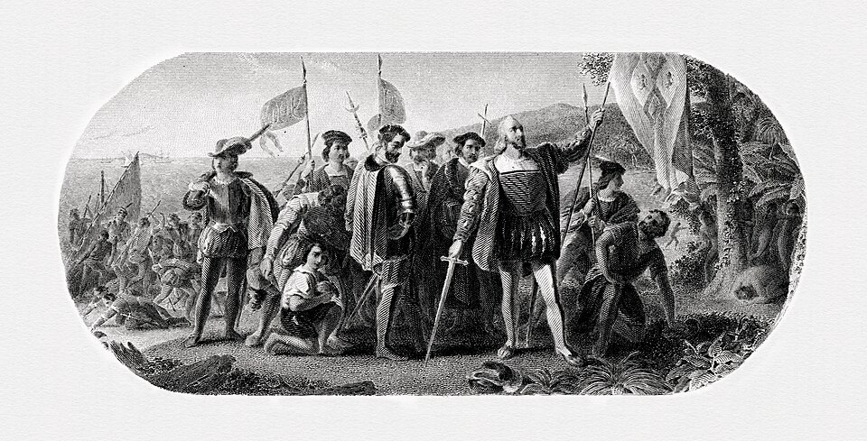
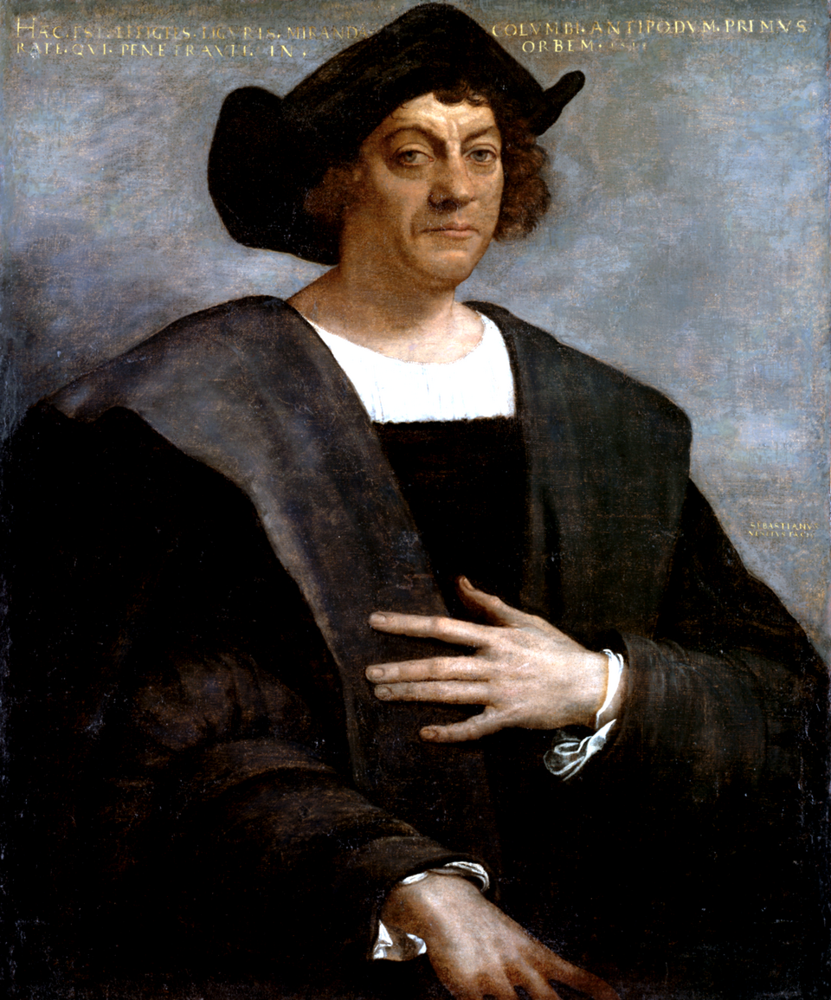
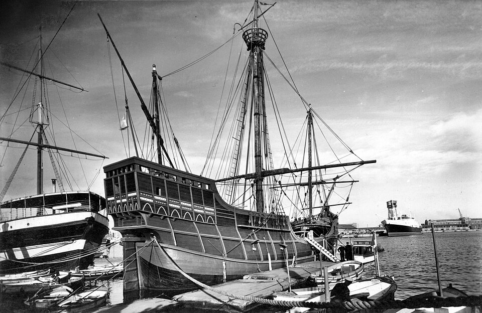

⏱️ 10초 카드 · 대항해시대 (1451~1506)
1492 대서양 횡단콜럼버스 교환논쟁적 유산
여는 질문 — '발견'이라는 말은 누구의 시선에서 본 걸까?
이름
한국어크리스토퍼 콜럼버스
원어Cristoforo Colombo
실제 발음콜럼버스
로마자Christophorus Columbus
영어권Christopher Columbus
왜 이 사람인가
이 도감에서 콜럼버스는 '같은 사건, 정반대의 기록'을 가장 날카롭게 보여 줘요. 그의 항해는 두 세계를 잇는 거대한 '연결'을 열었지만, 이미 사람이 살던 땅에는 재앙의 시작이기도 했죠. 영웅인가 침략자인가 — 이 도감은 어느 한쪽을 외우라고 하지 않아요. 증거(그의 일지까지!)를 놓고 네가 직접 판단해 보라고 권하죠.
생애
제노바의 직조공 집안에서 태어나 바다에서 잔뼈가 굵었어요. 지구 크기를 실제보다 훨씬 작게 계산하고는 '서쪽으로 가면 아시아가 가깝다'고 확신, 포르투갈·스페인 왕실을 10년 가까이 설득한 끝에 1492년 세 척으로 출항해 카리브에 닿았죠. 죽을 때까지 그곳을 아시아라 믿었어요.
그의 항해는 아메리카와 나머지 세계를 잇는 '콜럼버스 교환'의 문을 열었어요 — 감자·옥수수·고추가 세계로 퍼진 것도, 천연두가 아메리카를 휩쓴 것도 이 문을 통해서였죠. 인류사 최대의 연결이자, 카리브 사람들에겐 재앙의 시작이었어요.
히스파니올라 총독으로서 타이노인들에게 금 할당량을 강요하고 노예로 보냈으며, 통치가 너무 가혹해 스페인 왕실이 그를 체포·소환했을 정도예요(1500). 오늘날 '콜럼버스의 날'을 '원주민의 날'로 바꾸는 도시들이 늘어나는 것 — 그에 대한 평가가 지금도 진행 중이라는 뜻이에요.
자료로 보기 — 유묵·사진



남긴 말
“그들은 좋은 하인이 될 것이다. 쉰 명만 있으면 그들 모두를 부릴 수 있을 것이다.”
1492년 항해일지에서, 처음 만난 타이노인을 보고 적은 말 — '만남'이라는 말의 어두운 이면을 그대로 보여 줘요. · 출처: 콜럼버스 항해일지 1492 (요지)
“나는 인도(아시아)에 닿았다.”
그는 죽을 때까지 자신이 도착한 곳을 아시아라고 믿었어요. · 출처: 콜럼버스의 편지·일지(요지)
연표
- 1451출생 (제노바)
- 1492.10.12과나하니(카리브) 도착 — 두 세계의 만남
- 1493~15042~4차 항해 · 히스파니올라 식민 통치
- 1500가혹한 통치로 체포·소환
- 1506사망 — 끝까지 아시아라 믿은 채
생애의 길 — 제노바에서 카리브, 그리고 바야돌리드 🗺️
지중해의 직조공 아들에서 대서양을 건넌 항해가로. 번호를 차례로 눌러 보세요.
현재 지도 위 경로예요. 대서양을 건너 두 세계를 이은 그 항로가, 한쪽에는 '연결'을, 다른 쪽에는 '재앙'을 가져왔어요 — 같은 화살표의 두 얼굴이죠.
빛과 그림자항해의 집념과 성취는 역사를 바꿨지만, 그 '발견'은 이미 사람이 살던 땅의 비극으로 이어졌어요. 영웅과 침략자라는 두 평가 사이 — 어느 한쪽만 외우는 게 아니라 증거를 놓고 직접 판단해 보는 게 이 인물을 공부하는 법이에요.
더 깊이 (고등·일반)
지구를 작게 계산한 집념
제노바의 직조공 집안에서 태어나 바다에서 잔뼈가 굵은 콜럼버스는, 지구의 크기를 실제보다 훨씬 작게 잘못 계산했어요. 그 '착각' 덕분에 그는 '서쪽으로 조금만 가면 아시아'라고 확신했고, 포르투갈·스페인 왕실을 10년 가까이 끈질기게 설득한 끝에 1492년 세 척으로 출항했죠.
참고: 콜럼버스의 항해 계획 일반
1492 — 두 세계의 만남
1492년 10월, 콜럼버스의 배는 카리브의 한 섬(과나하니)에 닿았어요. 유럽과 아메리카, 수만 년 동안 따로 살아온 두 세계가 처음으로 이어진 순간이었죠. 그러나 콜럼버스는 그곳을 끝까지 '인도'라고 믿었고, 그래서 그곳 사람들은 지금도 '인디언'이라 불리는 오해의 이름을 갖게 됐어요.
참고: 1492년 카리브 도착 일반
콜럼버스 교환 — 감자와 천연두
그의 항해가 연 문으로, 두 세계의 동식물과 사람이 오갔어요. 감자·옥수수·고추·토마토가 세계로 퍼져 인류를 먹여 살린 한편, 천연두 같은 전염병이 면역 없는 아메리카 원주민을 휩쓸어 인구의 대부분을 죽였죠. '콜럼버스 교환'은 인류사 최대의 연결이자, 한쪽에는 거대한 비극이었어요.
참고: 콜럼버스 교환 일반
총독 콜럼버스 — 그리고 체포
콜럼버스는 히스파니올라 섬의 총독이 되어, 타이노인들에게 금 할당량을 강요하고 채우지 못하면 가혹하게 벌했으며 노예로 보내기도 했어요. 통치가 너무 잔혹해서, 놀랍게도 스페인 왕실이 그를 체포해 본국으로 끌고 갈 정도였죠(1500). 항해의 영웅과 가혹한 통치자가 한 사람이었던 거예요.
참고: 히스파니올라 식민 통치 일반
'발견'인가 — 콜럼버스의 날 vs 원주민의 날
오랫동안 콜럼버스는 '신대륙을 발견한 영웅'으로 기려졌어요. 하지만 그 땅에는 이미 수천 년 전부터 사람이 살고 있었죠 — 그러니 '발견'은 철저히 유럽 쪽의 시선이에요. 그래서 요즘 미국의 여러 도시는 '콜럼버스의 날'을 '원주민의 날'로 바꾸고 있어요. 한 인물에 대한 평가가 지금도 살아 움직이고 있다는 증거예요.
참고: 콜럼버스의 날 논쟁 일반
사람의 그물 — 함께 읽을 인물
이 인물이 나오는 이야기
더 공부하기 — 여기서 출발하세요
📚 책으로
- 1493 — 콜럼버스가 문을 연 신세계 ↗ · 찰스 만'콜럼버스 교환'이 세계를 어떻게 다시 짰는지.
- 콜럼버스 항해록 ↗그의 일지로 직접 읽는 1492년 — 빛과 그림자가 한 문장에.
📜 1차 사료
- 콜럼버스 항해일지 (1492) ↗카리브 도착의 첫 기록 — 타이노인에 대한 말도 여기 담겨 있어요.
🎬 영상으로
- CrashCourse 〈15세기의 항해가들〉 (콜럼버스·다가마·정화) ↗🟢 콜럼버스를 정화(중국)와 함께 다뤄 균형 잡힌 교육 영상(영어/자막).
📍 가 볼 곳
- 산토도밍고 (도미니카공화국)콜럼버스 가문이 다스린 신대륙 최초의 유럽 식민 도시.
- 팔로스 데 라 프론테라 (스페인)1492년 세 척이 출항한 항구.